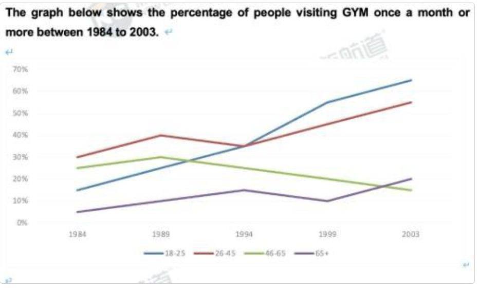

Task 1
Report the main features of the visual information.
Task prompt: The graph below shows the percentage of people visiting the gym once a month or more between 1984 and 2003.
Instructions: Summarise the information by selecting and reporting the main features, and make comparisons where relevant.
Write at least 150 words.

Put your Task 1 image at
Emerald Exam/writing-task1.jpg
or change the src path in this HTML file.